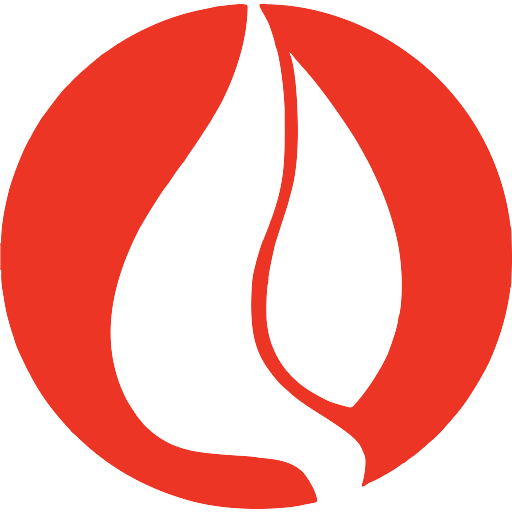
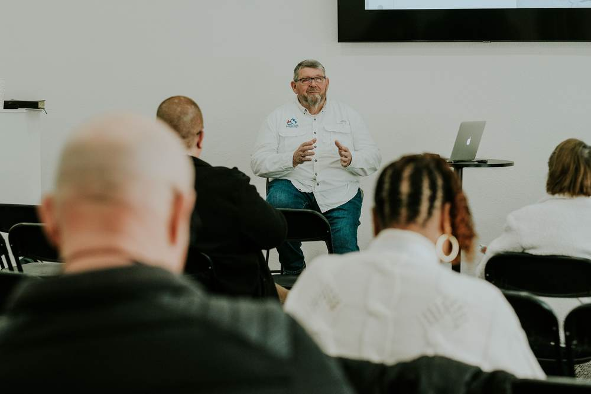
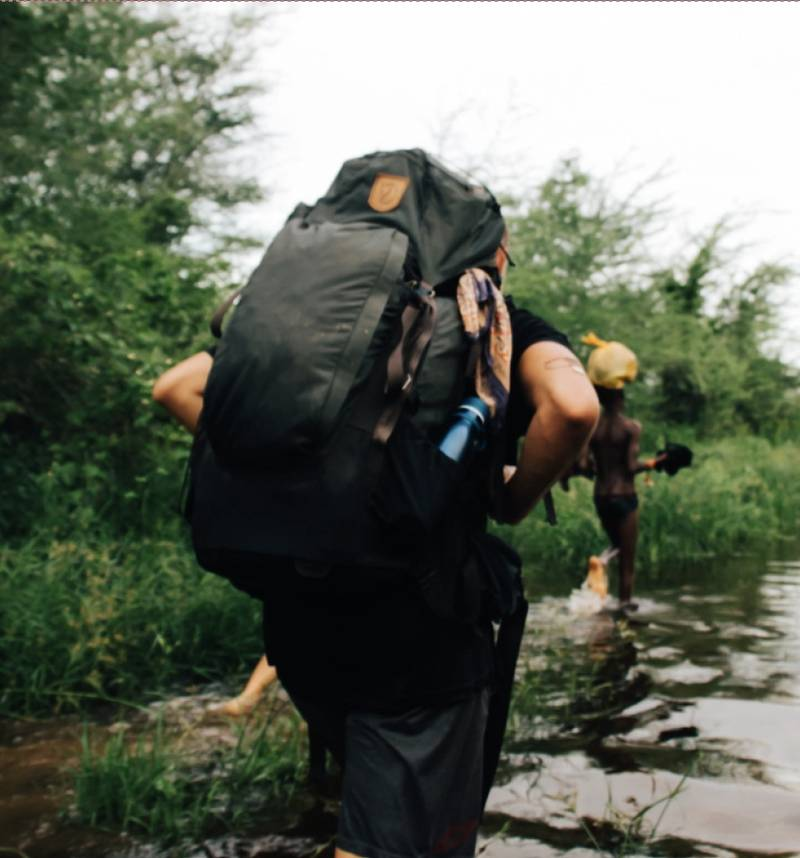

Shared across borders
A connected global network where churches and institutions contribute, learn from one another and strengthen the whole movement.

PCG Global Missions ENESPTThe vision
PTC is taking shape as a growing network of churches and learning communities that can share trusted Pentecostal teaching while honoring the language, wisdom and ministry life of each place.
The pathway begins with something useful: one course, understood in a local language, walked through with a local mentor and applied in real ministry. From there, the next faithful step can open into a lifetime of formation, service and shared learning.
A connected global network where churches and institutions contribute, learn from one another and strengthen the whole movement.
Learning carried in local languages, guided by local mentors and shaped by the realities of ministry on the ground.
Each step moves from understanding to practice—from faithful witness at home toward the peoples and places still waiting.
Worldwide horizon
Across nations, languages and generations, the Pentecostal movement carries deep local wisdom, living witness and a shared calling to form leaders for the whole Church. PTC envisions those strengths becoming more connected: learning that can travel without losing its roots, and relationships that allow one part of the global family to strengthen another.
The aim is not to make every setting the same. It is to create a common place for trusted teaching, local mentorship and cross-cultural exchange—so leaders can grow where they serve, colleges can contribute what they carry and the wider movement can learn together.
Education partners
PTC is being shaped through relationships that connect academic formation with practical mission preparation. These partners bring complementary strengths to a shared Pentecostal learning pathway.

Initial academic pathway partner
A Christian college serving as the initial academic pathway partner—helping anchor the Consortium’s vision in trusted higher education while opening doors for learning across the global mission family.
Visit Messenger College
Pioneer student pipeline
A youth-facing mission training partner cultivating a pipeline of young pioneer students—forming a new generation to listen, learn, cross cultures and take faithful first steps into global mission.
Visit Mission One ElevenOpen courseware
Explore course materials from each education partner. Open courses are separated from each institution’s formal application pathway.
Browse all coursesMission One Eleven
Seven open courses from the Mission One Eleven curriculum, from foundations in missiology through practicum and advanced leadership formation.
Course 01
Study through The Core and The Assignment with workbook, joined by gospel stories.
Course 02
Building on Firm Foundations and The Core frame gospel stories and personality assessments.
Course 03
Formation includes “Counting the Cost,” Following Jesus and an overview of world religions.
Course 04
A textbook study through Acts, supported by weekly video classes, readings and chapter tests.
Course 05
Mentoring in Missions is an 11-week guided journey.
Course 06
An overseas practicum with pre-trip documents, vaccinations, first aid, policies and cultural training, followed by debrief and a final paper.
Course 07 · Level 2
Leadership development sessions with Karl Hargestam, Tamara Gutel, Eman Hernandez, Mikael Boman and Marie Vanderwal.
The courses above are available as open courseware. Mission One Eleven handles its certificate and enrollment pathway separately.
Apply for certificate or enrollmentMessenger College
An open Christian ethics course from Messenger College educators, presented here for study and ministry formation.
This open course does not itself confer academic credit or a degree. Degree applications are handled directly by Messenger College.
Apply to Messenger CollegeGlobal collaboration
The larger vision is a relational network in progress: Pentecostal colleges, churches, educators, mentors and mission leaders sharing what they know and learning from one another across regions. Each collaborator can strengthen access, contextual wisdom and faithful formation without erasing the distinct calling of any place.
As those relationships grow, PTC can become a meeting place between established learning and emerging leaders—a global commons where resources are shared, local capacity is strengthened and the next generation is formed for service from the local church to the uttermost.